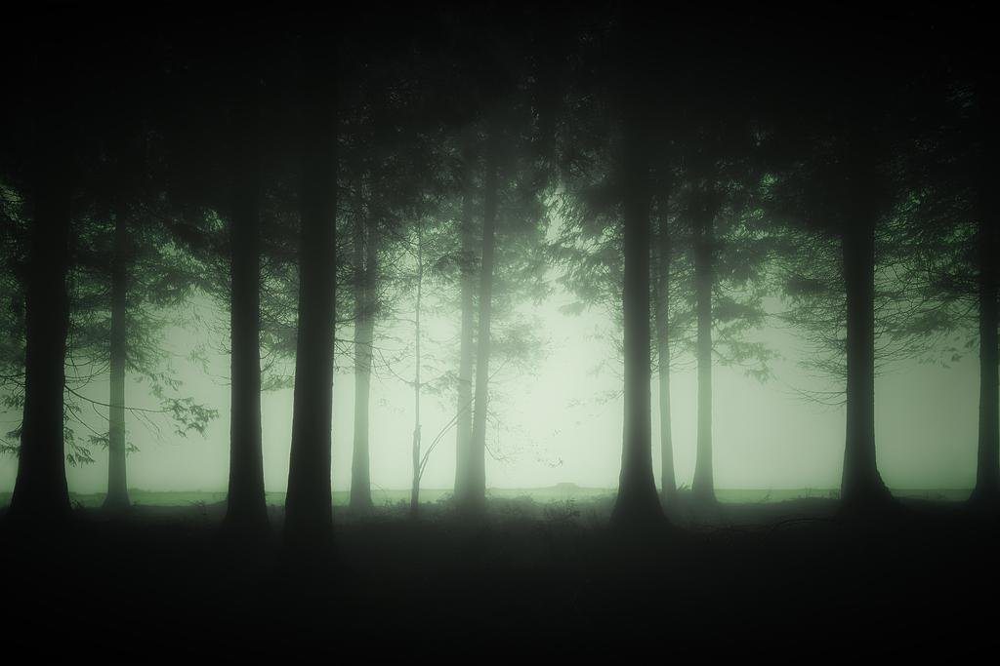

Night in Neon City: You just moved into neon city in order to start a new life and forge a new path for yourself. Encounter grueling challenges such as finding employment so you can afford rent, finding your soulmate whom you would spend your entire life with, or trying to find parking. This game features a multitude of endings and unique character interactions you wouldn't see anywhere else. Will you find yourself among the lights, or get lost in the big city, only you can decide. Press the Game Downloads tab to download it now.
 Search the woods: *Warning this game contains heavy topics like suicide and abuse, proceed with caution* In the town of Angel Hill, you are on the hunt for your little sister who has vanished without a trace. Last place she was known to be seen was the infamous Red Cedar woods, a dark twisted place not even the bravest of men dare to explore. Dive into the forest and discover more about the town and its dark past, your backstory on how you ended up in this town in the first place, and find and safely recover your sister before its too late. Sometimes, monsters don't just lurk in the shadows, they can lurk right beside us and we do not even know. Press the Game Downloads tab to download it now.
New Happy Home: You and your family just move into a new house after your parents found a new job, however not everything seems normal. You feel something is off about your new home, and try to piece together what is going on. Explore the many rooms in the house in order to discover what is really being kept hidden behind the foundation, interact with your family members in order to unlock memories of your past, they could be a clue on how to get answers to the problems you have yet to face. Maybe its all in your head, or maybe something sinister is going on here. its only up to you now to decided. You ready to move into your happy home? Lets see what you uncover. Press the Game Downloads tab to download it now.